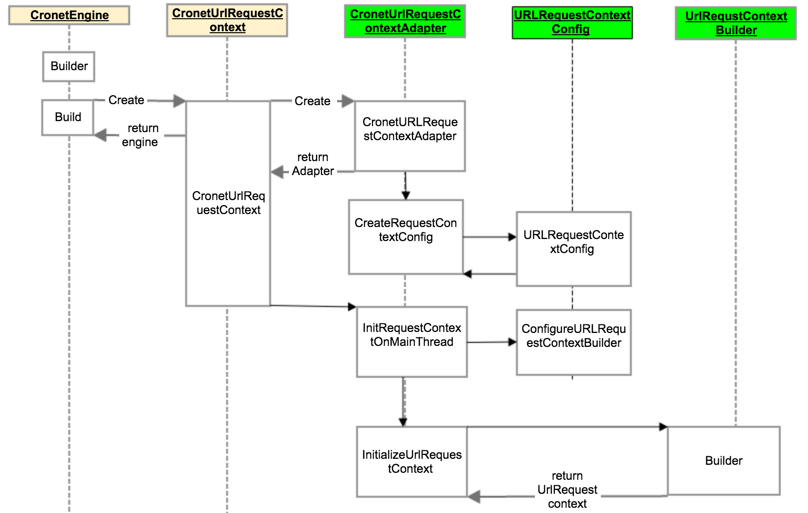

背景
对Cronet中如何做http cache做了一个梳理解析.
先介绍一下Cronet网络库的启动流程

以Android举例，如上图，Cronet是一个单线程网络库，在java层存在唯一的CronetEngine，在C++层存在唯一的URLRequestContext，它们是网络库最核心的上下文。
代码解析
我们重点关注一下httpCache是如何运作的
配置将会通过jni接口传递到C++层，会先初始化URLRequestContextConfig，传入必要配置，之后调用ConfigureURLRequestContextBuilder进行更精细的配置传递
把所有配置都消化好了之后，调用其build()方法，构建出url_request_context
为什么POST请求不支持httpCache
以上已经讲述了是否使用cache，在Cronet创建过程的异同点，最终使用httpCache，只是http_cache_transaction.cc 与 http_network_transaction.cc里面状态机的异同。
这里有个新问题可以一起探究一下，为啥Cronet的post请求不支持httpCache
首先我们看一下在http_cache_transaction中，已经有了针对post请求的单独处理逻辑。
那么代码里的upload_data_stream又是做啥的呢？
因此，cronet本身实际上把identifier关闭了（置0），使得所有依赖该值的功能都是失效的，包括post请求使用httpcache
佐证材料
先找一个相关的资料
http协议文档

来自rfc7234:[https://www.rfc-editor.org/rfc/pdfrfc/rfc7234.txt.pdf]chromium-discuss资料

[https://bugs.chromium.org/p/chromium/issues/detail?id=513164]
由http协议对httpcache的介绍来看，协议层是没有对使用httpcache的方法类型做限制的。
chromium项目论坛中的一个issue，包括cronet作者mmenke rvargas的回应。
基本观点是cronet作者不认为缓存post请求是合理的。
结论
目前cronet中的httpcache是不支持post的，原因是原作者不认为这是一个合理的使用场景。